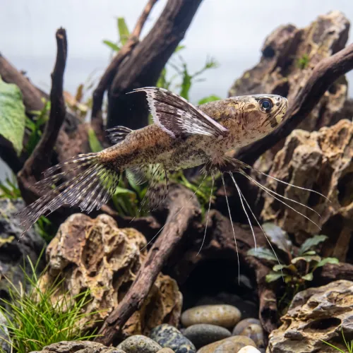

Nome popular principal
Borboleta Africana
Borboleta Africana, Peixe-Borboleta-Africano, African Butterfly Fish
Ficha de peixe
Peixes de Superfície e Exóticos
Um predador exclusivo da superfície com asas impressionantes, perfeito para aquários cobertos com plantas flutuantes.

Nome popular principal
Borboleta Africana, Peixe-Borboleta-Africano, African Butterfly Fish
Nome científico
Nome técnico essencial para taxonomia, cruzamento de manejo e referência editorial consistente.
Dificuldade de manejo
Use este nível como referência inicial, sempre considerando volume, estabilidade e compatibilidade do aquário.
Seção 1
Seção 2
Seções 4 a 6
Borboleta Africana tem hábito alimentar carnívoro. Média. 1 a 2 vezes ao dia. Exige alimentos que flutuem na superfície, preferindo insetos vivos como grilos pequenos, moscas e tenébrios, aceitando rações específicas de superfície com o tempo.
Machos têm a borda posterior da nadadeira anal recortada e com raios mais longos; nas fêmeas, a nadadeira anal é reta e uniforme. Tipo de reprodução: Ovíparo. Dificuldade de reprodução: Avançado. A desova ocorre na superfície entre plantas flutuantes. Os ovos flutuam e devem ser transferidos para outro recipiente para evitar que os pais os devorem.
Alta. Substrato recomendado: Qualquer substrato macio, pois a espécie habita estritamente a superfície da água. Necessidade de esconderijos: Média. Exige obrigatoriamente aquário bem tampado, pois é um saltador excepcional na natureza ao perseguir insetos em voo.
Seção 7
Sensível a fortes correntes de água na superfície; aprecia água morna, limpa e sombreada por plantas flutuantes.
Seção 8
Sim, é uma excelente saltadora na natureza para capturar insetos e necessita do aquário perfeitamente tampado.
Pode aceitar rações secas que flutuem na superfície, mas sua dieta principal deve incluir insetos vivos ou congelados.
Não é recomendado, pois qualquer peixe pequeno que habite a superfície será visto como presa e devorado.